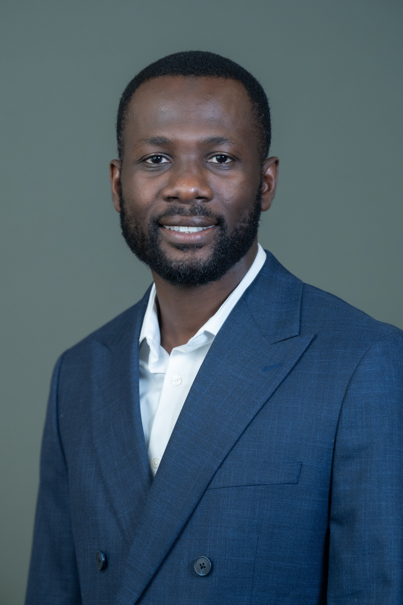

I am a Visiting Assistant Professor of Management Science at Tulane University's A. B. Freeman School of Business. I study how decision modeling, optimization, and spatial analytics can help communities plan services and adapt to climate change.
My research focuses on public transit, access to senior-serving facilities, and shared housing. I am particularly interested in how agencies and community-based organizations can allocate scarce resources and improve service delivery.
I earned my Ph.D. in Information Systems for Data Science and Management from the University of Massachusetts Boston in 2026. Before that, I studied mathematics at Ohio University and the University of Cape Coast.
My doctoral advisor was Jeffrey Keisler, with Michael Johnson as my co-advisor.

Mubarak Iddrisu
Some content could not be loaded. Please refresh, or read my CV.